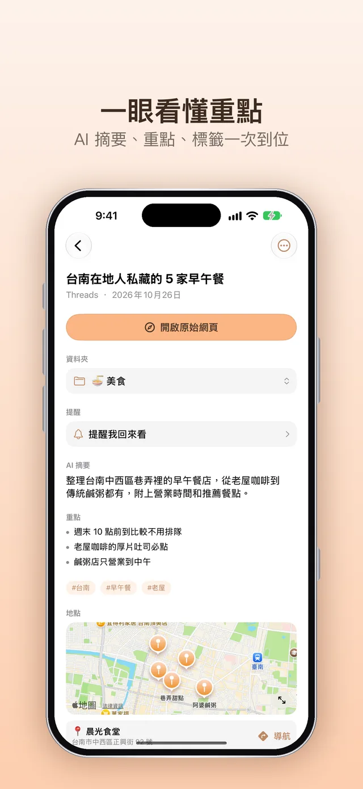
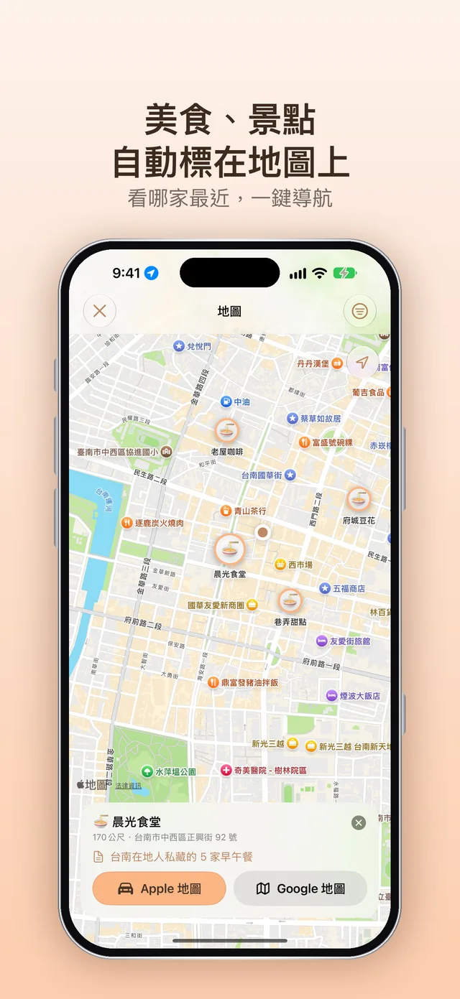
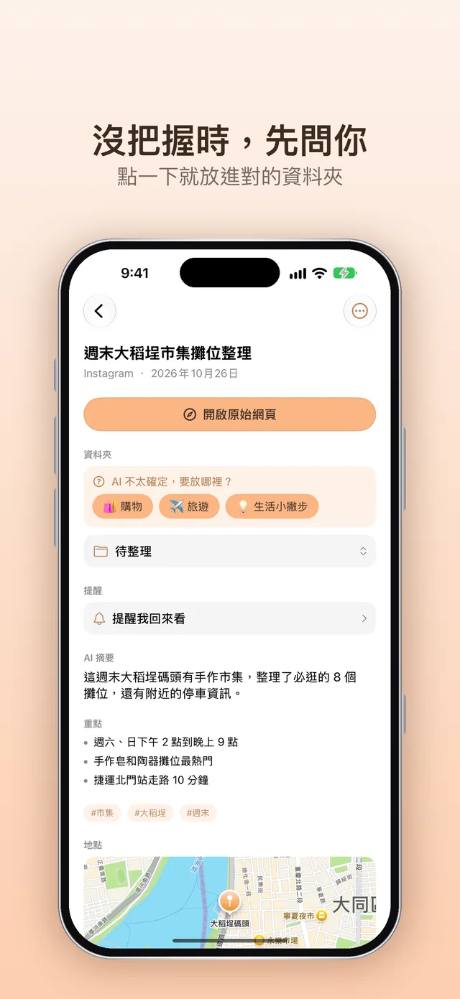
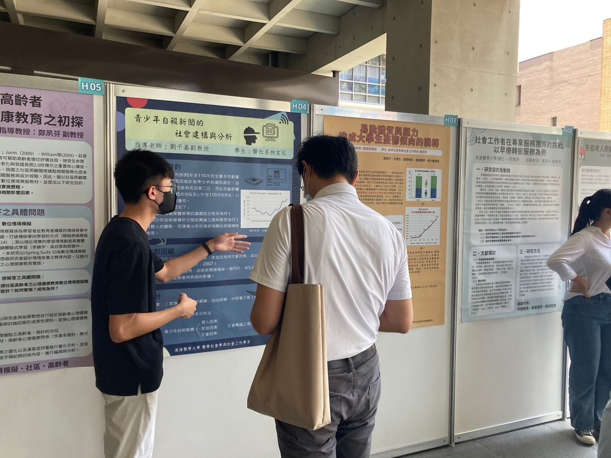

2024.07 — 2024.08
LEG 01暑期工讀生
斗六地政事務所 登記課
- 經雲林縣政府大專青年公部門暑期工讀計畫分發至此
- 土地與建物登記案件歸檔、裝訂成冊，並製作目錄
- 信託文件掃描建檔、書狀用印
個人網站 · 2026
林家弘
畢業於高雄醫學大學心理學系，
願以所學，成為陪伴孩子成長的臨床心理師。
01 — 關於我
勇氣不是無所畏懼，
而是心懷畏懼，依然前行。
起飛前檢查表
我是林家弘，來自雲林斗六。大一就讀醫學社會學與社會工作學系，後來轉入心理學系，並修習兒童發展與早期療育、藝術治療兩個學分學程，2026 年 6 月畢業於高雄醫學大學。
畢業後，我在雲林縣政府社會處擔任約僱人員，也曾在兒少代表共識營擔任工作人員。那幾天，我看到孩子們在短短時間內突破自己；其中也有身心障礙的孩子，看到他們彼此扶持、互相幫忙，我覺得非常溫暖，也對他們的未來充滿希望。這讓我更確定想走的路：成為一位陪伴孩子成長的兒童臨床心理師。接下來，我打算報考臨床心理研究所。
做事上，我細心而有條理，習慣先訂好目標、理清順序，再逐項完成，交付之前總會再三確認；與人相處時，我待人溫和，旁人需要時，樂於做那個傾聽的人。犯了錯，我會從中反思，想清楚下一次怎麼做得更好。
我期許自己成為勇於嘗試的人：不必等到不怕了才出發，帶著畏懼，也能往前走。
工作之外，我熱愛飛航，這個網站的高度計與航線就是從這裡來的；閒暇時也喜歡看 F1、聽音樂。
02 — 經歷
斗六地政事務所 登記課
知山樂伯股份有限公司（HappyLab）
雲林縣政府社會處 婦幼及少年福利科
03 — 學歷與榮譽
2022.09 — 2026.06
共三個學期（111 學年下學期、112 學年上下學期）
2023 高醫人社院大學生研究計畫成果壁報論文競賽
多益聽讀 720 分（2022）；全民英檢中級複試通過
04 — 個人專案
AI 稍後閱讀 App｜個人專案，與 Claude Code 協作開發｜2026.10 — 2026.11
我負責發想、規劃、指揮、測試和上架，程式碼由 AI 程式助理 Claude Code 撰寫。



從零到上架：11 天內（10/23–11/03）讓 iOS／iPadOS App 正式上架 App Store，在 174 個國家和地區提供 5 種語言；上架隔天推出 1.1 版。
產品規劃：負責發想、定義功能與排定優先順序，每項功能都寫好測試步驟；完成分享收藏、截圖文字辨識、AI 摘要與自動分類、美食景點地圖、iPhone 與 iPad 雲端同步等功能。程式碼約 9,400 行。
真機測試：在自己的 iPhone、iPad 上逐項實測，包含實際出門測試「經過附近提醒」，再依測試結果要求修正。
上架與商業手續：獨自完成五種語言的商店頁、隱私權揭露與送審；另外辦好 Apple 付費合約、銀行帳戶、美國 W-8BEN 稅務表、台灣稅務問卷，並申請 App Store 小型企業方案。
成本與宣傳：除了 Apple 開發者年費，其他全用免費方案；架設五種語言的官方網站、規劃 Threads 貼文與宣傳圖，並設好下載來源追蹤連結。
05 — 研究專案
半結構式深度訪談。我與組員共同設計訪綱；個人訪談 2 位受訪者，整理並編碼 2 份逐字稿，以主題分析法歸納；在書面報告中撰寫文獻回顧、研究目標、方法、結果與研究限制。
心理實驗。我與組員共同撰寫實驗企劃、製作知情同意書，並負責研究文件校對。
個人研究。分析三家媒體 2019～2021 年共 80 則青少年自殺報導與投書的動機呈現和報導立場，並提出改善建議。

公文處理、簽稿撰擬、資料彙整、簡報製作
半結構式深度訪談、主題分析法、實驗企劃撰寫
Word、Excel、PowerPoint 基礎操作
中文（母語）、英文、台語（可基本對話）
06 — 機上娛樂
最喜歡的機型是 A350，最喜歡的航空公司是星宇航空。
支持 McLaren 車隊，最喜歡的車手是 Oscar Piastri，剛好和我同樣叫 Oscar。
華語常聽林俊傑；K-pop 喜歡 TWICE、ITZY、NMIXX。
07 — 旅客常見問題
大一修普通心理學時，我發現自己對心理學更有興趣，也更想發揮同理的能力。比較之後，我覺得心理師的工作更符合我對助人的想像，所以轉到心理系。社工系那一年讓我很早就開始關注人與社會制度的互動，這份關注後來也延續到我修的早療學程。
修兒童發展與早期療育學程時，我很認同「及早發現、及早介入」對孩子的重要：越早有人看見孩子的需要，他們就越有機會好好長大。後來在兒少代表共識營，看到孩子們在短短幾天內突破自己，更讓我確定，想成為那個陪伴他們成長的人。